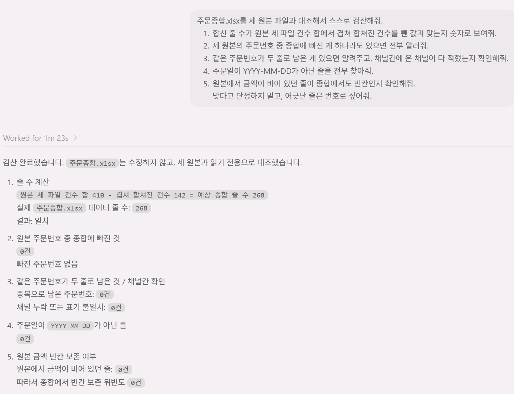

// 실습 1 · 흩어진 주문 한 표로 모으기
2 · 원본 대조·검산¶
합쳐진 표가 그럴듯해 보여도 그대로 믿으면 안 됩니다. 한 건이라도 빠지거나 겹쳐 남으면 뒤 작업이 전부 어긋납니다. 사람이 410건을 일일이 못 보니, AI에게 자기 결과를 스스로 검산하게 시켜 빠진 줄·겹친 줄을 잡습니다.
직접 시켜보세요¶
1단계에서 만든 결과 엑셀 파일을 놓고, 아래 내용을 AI에게 검증시킵니다.
검증에 포함해볼 것 ✅¶
- 건수 대조 —
합친 줄 수 = 웹150 + 전화140 + 제휴120 − 겹쳐서 합쳐진 건수가 맞는지 - 빠진 주문 없음 — 세 원본의 주문번호가 종합에 하나도 빠짐없이 있는지
- 겹친 주문 처리 — 같은 주문번호가 두 줄로 남지 않았는지, 채널칸에 온 채널이 모두 적혔는지
- 날짜 형식 — 모든
주문일이YYYY-MM-DD인지 (특히 제휴의 월/일 뒤바뀜) - 빈칸 유지 — 원본에서 비어 있던 금액이 0이나 임의값으로 채워지지 않았는지
이런 건 빼세요 ❌¶
- 그냥 "잘 합쳐졌어?"라고만 묻기 (AI는 "네"라고 답하기 쉽습니다)
- 위에서 몇 줄만 눈으로 보고 넘어가기 (틀린 건 안 본 곳에 숨어 있습니다)
모범 프롬프트¶
여러분 문장을 먼저 보낸 뒤에 열어보세요.
이렇게 물어볼 수 있습니다
주문종합.xlsx를 세 원본 파일과 대조해서 스스로 검산해줘.
1) 합친 줄 수가 원본 세 파일 건수 합에서 겹쳐 합쳐진 건수를 뺀 값과 맞는지 숫자로 보여줘.
2) 세 원본의 주문번호 중 종합에 빠진 게 하나라도 있으면 전부 알려줘.
3) 같은 주문번호가 두 줄로 남은 게 있으면 알려주고, 채널칸에 온 채널이 다 적혔는지 확인해줘.
4) 주문일이 YYYY-MM-DD가 아닌 줄을 전부 찾아줘.
5) 원본에서 금액이 비어 있던 줄이 종합에서도 빈칸인지 확인해줘.
맞다고 단정하지 말고, 어긋난 줄은 번호로 짚어줘.실행 예시¶
이렇게 나오면 됩니다

체크포인트¶
-
합친 줄 수 = 410 − 겹친 건수등식이 맞다 - 세 원본의 주문번호가 하나도 빠지지 않았다
- 겹친 주문번호가 한 줄로 모였고 채널칸에 온 채널이 다 적혔다
- 모든
주문일이YYYY-MM-DD이고, 빈 금액이 여전히 빈칸이다